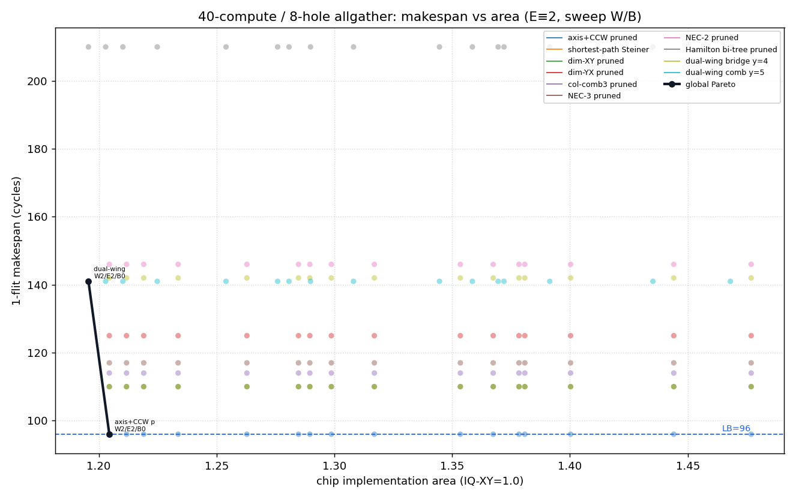
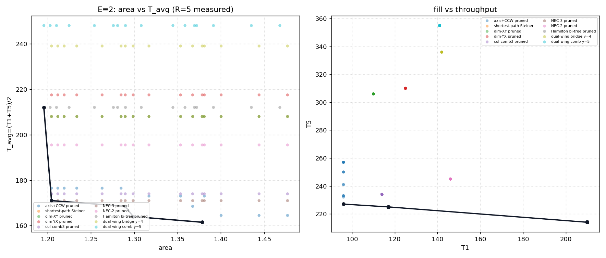

8×6 mesh · H=7 · V=9 · Eject E≡2（仅扫 W/B）·
非计算节点 = 1-indexed 第4–5列 × 第1–4行（非坏点：router/链路可用，仅不 inject/eject）·
160 个 (scheme,W,E=2,B) 点 · 数据 holes40_area_makespan.json · 生成 2026-07-23T01:52:43.495375+00:00
C = 计算节点（allgather inject/eject 端点）； H = 非计算节点——不是坏点：该处 router 与相邻链路仍完全可用，只是没有参与 本次集合通信的 PE，故不 inject / 不 eject，仅作中转。
示意：axis+CCW 剪枝树，源 (6,1)；蓝=C↔C，橙虚线=经 H router（H≠故障）。
把 40 个计算端点分成左翼（x≤2）与右翼（x≥5）；
中间列（x=3,4，y=0…3）是非计算节点——router/链路仍在，只是本方案选择不在其上
汇聚跨翼流量。跨翼流量一律先走到顶行 y=5（整行皆为 C），沿该行东西桥接，
再沿目标列竖直下探——形如梳子：顶行是脊（bridge spine），各列是齿（teeth）。
wing_bridge_y4 对比：后者桥在 y=4，跨翼会经过 H 的可用 router；
comb 把桥抬到 y=5，是路由形态选择（集中到 C 行），不是因为 H 不可用。上图源 = (1,1)（左翼）；金黄带 = bridge y=5；蓝竖线 = 齿；L/R 底色区分双翼； 灰框 = 非计算区（router 仍可用，本树未使用）。

细线=各方案自身前沿；黑线=全局 Pareto；蓝虚线=LB=96。
| 方案 | Pmax* | issue* | dilation | T1 地板 | T1 地板面积 | T5 地板 | 全局Pareto |
|---|---|---|---|---|---|---|---|
| axis+CCW pruned | 34 | 4 | 96 | 96 | 1.2045 | 227 | 是 |
| shortest-path Steiner | 34 | 4 | 96 | 110 | 1.2045 | 306 | 否 |
| dim-XY pruned | 34 | 4 | 96 | 110 | 1.2045 | 306 | 否 |
| dim-YX pruned | 36 | 4 | 96 | 125 | 1.2045 | 310 | 否 |
| col-comb3 pruned | 39 | 4 | 114 | 114 | 1.2045 | 234 | 否 |
| NEC-3 pruned | 39 | 4 | 117 | 117 | 1.2045 | 225 | 否 |
| NEC-2 pruned | 40 | 4 | 145 | 146 | 1.2045 | 245 | 否 |
| Hamilton bi-tree pruned | 40 | 2 | 210 | 210 | 1.1956 | 214 | 否 |
| dual-wing bridge y=4 | 34 | 4 | 123 | 142 | 1.2045 | 336 | 否 |
| dual-wing comb y=5 | 40 | 2 | 141 | 141 | 1.1956 | 355 | 是 |
* Pmax/issue 由 alive 树在 offset=0 叠加下估计（用于日历面积），非综合结果。 面积 = 1.0 + 时隙表(Pmax,issue) + CalFork(0.025) + eject(W,E,B)。
| 面积(归一) | makespan | 方案 | W/E/B |
|---|---|---|---|
| 1.1956 | 141 | dual-wing comb y=5 | W2/E2/B0 |
| 1.2045 | 96 | axis+CCW pruned | W2/E2/B0 |

T5 / II_eff / delta2 由自由多轮打包测得；T_avg=(T1+T5)/2。 cyclic 链路复用下界≠逐源第2 flit 间隔（delta2）。
| 面积 | T_avg | T1 | II_eff | T5 | 方案 | W/E/B |
|---|---|---|---|---|---|---|
| 1.1956 | 212.0 | 210 | 1.0 | 214 | Hamilton bi-tree pruned | W2/E2/B0 |
| 1.2045 | 171.0 | 117 | 27.0 | 225 | NEC-3 pruned | W2/E2/B0 |
| 1.2896 | 168.5 | 96 | 36.25 | 241 | axis+CCW pruned | W3/E2/B1 |
| 1.2987 | 164.0 | 96 | 34.0 | 232 | axis+CCW pruned | W3/E2/B2 |
| 1.3784 | 161.5 | 96 | 32.75 | 227 | axis+CCW pruned | W4/E2/B2 |
| T1 | T5 | II_eff | delta2 min/avg/max | 方案 | W/E/B |
|---|---|---|---|---|---|
| 96 | 227 | 32.75 | 1/5.03/24 | axis+CCW pruned | W4/E2/B2 |
| 117 | 225 | 27.0 | 2/7.6/26 | NEC-3 pruned | W2/E2/B0 |
| 117 | 225 | 27.0 | 2/7.6/26 | NEC-3 pruned | W2/E2/B1 |
| 117 | 225 | 27.0 | 2/7.6/26 | NEC-3 pruned | W2/E2/B2 |
| 117 | 225 | 27.0 | 2/7.6/26 | NEC-3 pruned | W2/E2/B4 |
| 117 | 225 | 27.0 | 2/7.6/26 | NEC-3 pruned | W2/E2/B8 |
| 117 | 225 | 27.0 | 2/7.6/26 | NEC-3 pruned | W2/E2/B11 |
| 117 | 225 | 27.0 | 2/7.6/26 | NEC-3 pruned | W3/E2/B1 |
| 117 | 225 | 27.0 | 2/7.6/26 | NEC-3 pruned | W3/E2/B2 |
| 117 | 225 | 27.0 | 2/7.6/26 | NEC-3 pruned | W3/E2/B4 |
| 117 | 225 | 27.0 | 2/7.6/26 | NEC-3 pruned | W3/E2/B8 |
| 117 | 225 | 27.0 | 2/7.6/26 | NEC-3 pruned | W3/E2/B11 |
| 117 | 225 | 27.0 | 2/7.6/26 | NEC-3 pruned | W4/E2/B1 |
| 117 | 225 | 27.0 | 2/7.6/26 | NEC-3 pruned | W4/E2/B2 |
| 117 | 225 | 27.0 | 2/7.6/26 | NEC-3 pruned | W4/E2/B4 |
| 117 | 225 | 27.0 | 2/7.6/26 | NEC-3 pruned | W4/E2/B8 |
| 117 | 225 | 27.0 | 2/7.6/26 | NEC-3 pruned | W4/E2/B11 |
| 210 | 214 | 1.0 | 1/1.0/1 | Hamilton bi-tree pruned | W2/E2/B0 |
| 210 | 214 | 1.0 | 1/1.0/1 | Hamilton bi-tree pruned | W2/E2/B1 |
| 210 | 214 | 1.0 | 1/1.0/1 | Hamilton bi-tree pruned | W2/E2/B2 |
| 210 | 214 | 1.0 | 1/1.0/1 | Hamilton bi-tree pruned | W2/E2/B4 |
| 210 | 214 | 1.0 | 1/1.0/1 | Hamilton bi-tree pruned | W2/E2/B8 |
| 210 | 214 | 1.0 | 1/1.0/1 | Hamilton bi-tree pruned | W2/E2/B11 |
| 210 | 214 | 1.0 | 1/1.0/1 | Hamilton bi-tree pruned | W3/E2/B1 |
| 210 | 214 | 1.0 | 1/1.0/1 | Hamilton bi-tree pruned | W3/E2/B2 |
| 210 | 214 | 1.0 | 1/1.0/1 | Hamilton bi-tree pruned | W3/E2/B4 |
| 210 | 214 | 1.0 | 1/1.0/1 | Hamilton bi-tree pruned | W3/E2/B8 |
| 210 | 214 | 1.0 | 1/1.0/1 | Hamilton bi-tree pruned | W3/E2/B11 |
| 210 | 214 | 1.0 | 1/1.0/1 | Hamilton bi-tree pruned | W4/E2/B1 |
| 210 | 214 | 1.0 | 1/1.0/1 | Hamilton bi-tree pruned | W4/E2/B2 |
| 210 | 214 | 1.0 | 1/1.0/1 | Hamilton bi-tree pruned | W4/E2/B4 |
| 210 | 214 | 1.0 | 1/1.0/1 | Hamilton bi-tree pruned | W4/E2/B8 |
| 210 | 214 | 1.0 | 1/1.0/1 | Hamilton bi-tree pruned | W4/E2/B11 |
生成：utils/gen_holes40_area_report.py ·
DSE：utils/dse_holes40_area_makespan.py（复用 holes_40 树 / multi_area 面积模型）